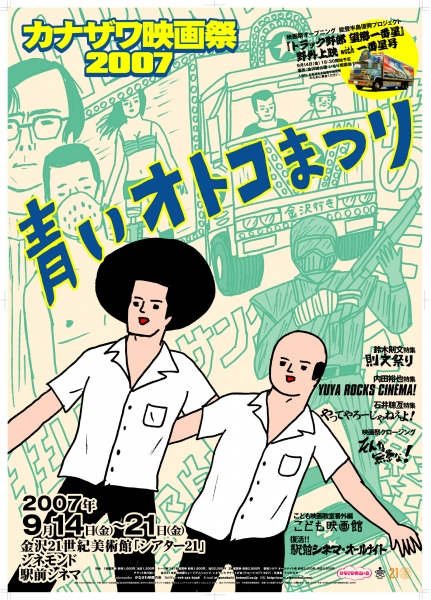
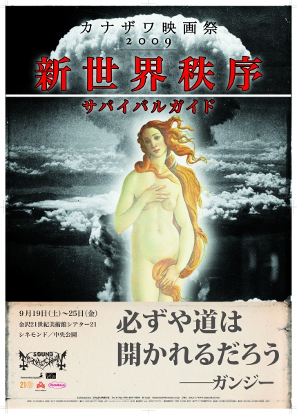
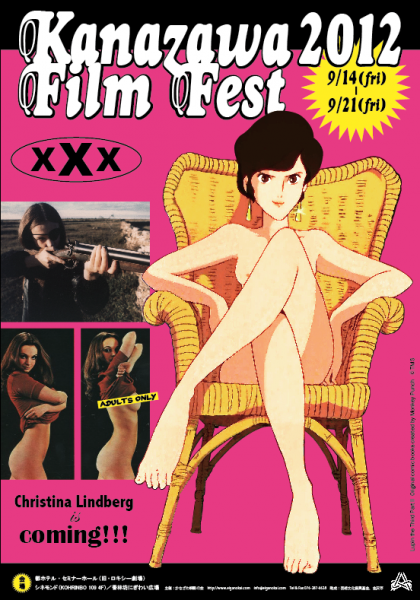
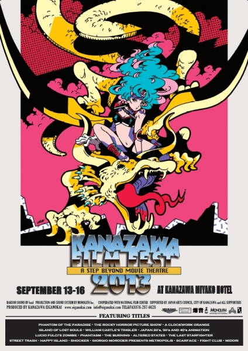
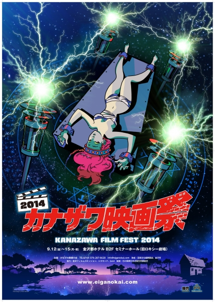
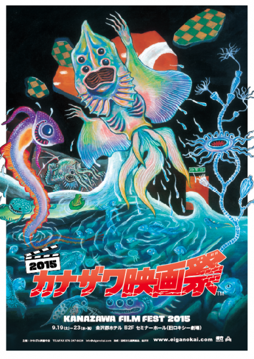

おかげさまでカナザワ映画祭は今年で10周年となります。これもひとえにこれまでカナザワ映画祭を支えてくれた皆さんのお陰です。今回、10周年にあたってこれまでのカナザワ映画祭で上映した作品や開催したイベントで「また観たい」というものや、「あの時は観れなかったけど是非観たい」というものを皆さんに投票していただき、投票数が上位のものをカナザワ映画祭2016（9月開催予定）にてリバイバルさせたいと思います。尚、作品やイベントによっては権利上の都合やゲストのスケジュールなどで実現出来ない場合もありますのでご了承ください。それでは何卒下記の投票フォームからご記入をよろしくお願いいたします。※各ポスターをクリックするとカナザワ映画祭の各年のページをご覧いただけます。投票フォーム読み込んでいます...


おかげさまでカナザワ映画祭は今年で10周年となります。
これもひとえにこれまでカナザワ映画祭を支えてくれた皆さんのお陰です。
今回、10周年にあたってこれまでのカナザワ映画祭で上映した作品や開催したイベントで「また観たい」というものや、「あの時は観れなかったけど是非観たい」というものを皆さんに投票していただき、投票数が上位のものをカナザワ映画祭2016（9月開催予定）にてリバイバルさせたいと思います。
尚、作品やイベントによっては権利上の都合やゲストのスケジュールなどで実現出来ない場合もありますのでご了承ください。
それでは何卒下記の投票フォームからご記入をよろしくお願いいたします。
※各ポスターをクリックするとカナザワ映画祭の各年のページをご覧いただけます。